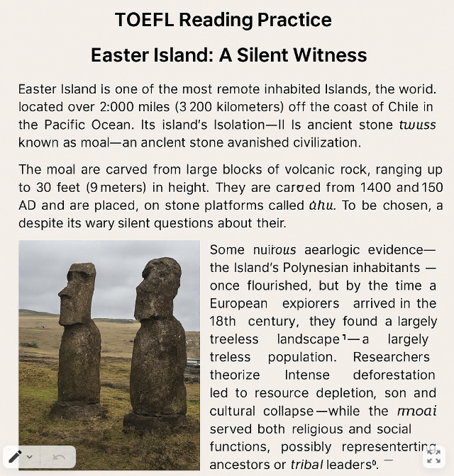
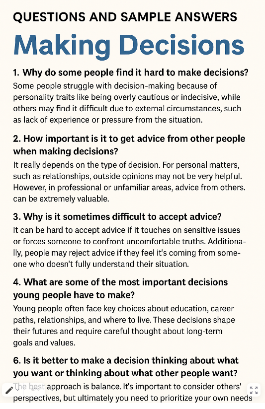
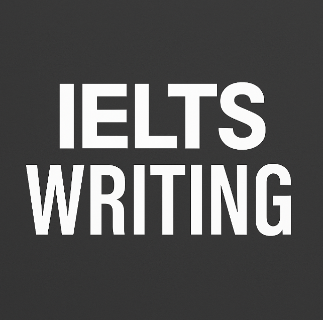

Full campus-themed pack: 30+ TOEFL terms, five flagship universities (MIT · Stanford · Harvard · Caltech · Cambridge), a long Harvard vs Yale case study, grammar focus on whole / all / all of, and a dedicated section on prepositional phrases that native speakers get right automatically — and learners often miss.
Tap a card to flip RU translation. 34 terms — learn by chunks, not one by one.
Use the word bank. Each word is used exactly once.
Speak for 45–60 seconds per question. Record yourself and re-listen.
Collocations that return in TOEFL Reading & Listening. Tap a card to flip.
Among the universities described (MIT, Stanford, Harvard, Caltech, Cambridge), which one would you most like to attend? Use specific details from the descriptions to support your answer.
Some students prefer a university that focuses primarily on science and technology (MIT, Caltech), while others prefer an institution with a broader range of disciplines (Harvard, Cambridge). Which type is better, and why?
📖 Reading: “Stanford University is known for its entrepreneurial focus and its close ties to Silicon Valley. It prepares students to solve complex global problems and encourages innovation.”
🎧 Listening (transcript): “I think Harvard is a better choice because it offers more scholarships and has one of the largest university libraries in the world. That gives students both financial support and outstanding academic resources.”
🗣 Question: Summarize the two viewpoints. Then state which university you would personally choose, and explain your reasons.
C1–C2 reading. First read twice; then answer the 6 recall questions below.
Harvard and Yale — two of the most prestigious Ivy League universities — have long been rivals, competing not only for the top positions in global rankings but also for influence, reputation, and the strength of their alumni networks. Yet the question remains: which institution truly stands above the other? To approach this fairly, we shall evaluate them across six categories: cost, academics, job prospects, campus, student body, and student life.
1. Cost. Annual tuition, including room, board, and personal expenses, is nearly identical at both institutions: Harvard at $57,950 and Yale at $58,600. However, when financial aid is considered, Harvard emerges slightly stronger. Roughly 60% of Harvard undergraduates receive about $182 million in need-based aid annually, compared with 55% of Yale students who receive $120 million. Both schools guarantee substantial aid packages for students from families earning under $65,000 per year. 📌 Advantage: Harvard
2. Academics. Both institutions offer rigorous liberal arts curricula. Harvard requires students to follow a Core Curriculum, exposing them to diverse disciplines. Yale mandates distributional requirements, ensuring exposure to the humanities, social sciences, and natural sciences. Harvard is marginally stronger in the sciences, while Yale is renowned for drama and the arts. Harvard offers 3,900 courses across 40 majors, compared with Yale’s 2,000 courses but a wider choice of 75 majors. Faculty-to-student ratios are nearly identical (7:1 vs. 6:1). Harvard boasts 47 Nobel Laureates and 47 Pulitzer Prizes; Yale counts 25 Nobel Laureates but an impressive 56 Pulitzer Prizes. 📌 Result: virtually equal — each excels in distinct fields.
3. Job Prospects. Harvard graduates report an average starting salary of $50,700 (vs. Yale’s $48,900) and mid-career earnings of $111,000 (vs. $105,000). Harvard ranked #3 nationally for job prospects, Yale #4. Times Higher Education placed Harvard #1 globally, Yale #10. Harvard produced eight U.S. Presidents and 20 Supreme Court Justices, compared with Yale’s five and 10. Harvard dominates the Fortune 500 CEO list with 65 degrees. 📌 Advantage: Harvard
4. Campus. Harvard sits in vibrant Cambridge, Massachusetts, adjacent to Boston; its libraries hold ~17 million volumes. Yale occupies New Haven, Connecticut, a city with a mixed reputation for safety but rich in culture; Yale’s libraries house 12.99 million volumes. Both offer historic architecture and world-class athletic facilities, though Harvard’s endowment ($30.7 billion) far surpasses Yale’s ($19.3 billion). 📌 Advantage: Harvard
5. Student Body. Harvard’s acceptance rate is 5.8%, Yale’s 6.7%. Both attract highly diverse cohorts (~21% Asian American, 10% African American, 11% Hispanic/Latino). Yale students tend to score marginally higher on the SAT. Nevertheless, Harvard’s slightly lower acceptance rate gives it the edge. 📌 Advantage: Harvard
6. Student Life. Both boast over 400 organizations. Yale’s defining feature is its residential college system; Harvard uses a similar house system. Harvard ranks higher for dining facilities (#12 vs. Yale’s #21), but Yale surpasses Harvard in nightlife and ranked #3 nationally for student happiness, vs. Harvard’s #11. 📌 Advantage: Yale
The Verdict. Harvard ultimately emerges as the winner, holding slight but consistent advantages in cost, job prospects, campus environment, and student body. Yale, however, excels in student life and remains a formidable rival.
the whole + singular noun → the whole city, the whole week, the whole chicken (one complete thing, taken as a single unit).all + plural noun / uncountable → all people, all information. No of needed before a bare noun.all of + pronoun is obligatory: all of them, all of us — never “all them”.all / all of + the + noun → both work; all the students ≈ all of the students. Shorter is usually better in writing.whole is a determiner/adjective; all can be a determiner or an indefinite pronoun (“all were present”).Almost every mistake here comes from directly translating Russian. Lock the patterns into muscle memory before the mock.
at university (BrE) · in college (AmE) — being a student overall. ❌ “in university”, “on university”.on campus / off campus — physical area. ❌ “in campus”, “at campus”.in class — during the actual lesson. ❌ “on class”, “at class”, “in the class” (unless you mean one specific class).at the lecture — present at the event. in the lecture — inside the content (“she said X in the lecture”). Both exist; don’t mix them.during the lecture / before class / after class. ❌ “on the lecture”.a degree in X · a Master’s in X · a PhD in X. ❌ “degree of history”.to major in X (AmE) · to specialise in X (BrE). ❌ “to major on”.to graduate from a university. ❌ “graduate at / graduate in Oxford”.to apply to a university for a programme. ❌ “apply in / apply on”.to be accepted to / into a programme. ❌ “accepted in”.enrolled in a course · enrolled at a university.research on / into a topic · a lecture on X · a test on X · an expert in / on X.good at maths · interested in art · passionate about history · take notes on a topic.by the deadline (not later than) · on time (punctual) · in time (for) (early enough).As we embark on this journey of higher education, let us reflect on the reasons that drive us to pursue a university education. University provides us with knowledge, skills and expertise in our chosen field — but there are other reasons: building network connections with classmates and professors, or broadening horizons through extracurricular activities and clubs.
So why do you think people attend college or university?
Marty: “I’m passionate about psychology, and I believe a degree will give me both the academic knowledge and practical skills I need to make a positive impact in people’s lives.”
Ellen: “University is not just about academics, but also about overall growth and development as an individual. It’s a time for self-discovery, trying new things, and pushing ourselves outside of our comfort zones.”
Your task: write a 100+ word response. Use at least three target constructions:
It is essential that …Were … to …Not only … but also …Hello everyone,
In my view, people attend university for reasons that go far beyond academics. What I strongly believe is that university education plays a vital role in preparing us for the realities of today’s job market. It is essential that students acquire not only theoretical knowledge but also practical skills that employers are looking for.
I agree with Marty that professional expertise matters, and with Ellen that personal growth is equally important. Were universities to focus only on textbooks and exams, students would miss the chance to build communication and leadership skills. Nowadays employers expect graduates to be flexible, creative and culturally aware.
Not only is a degree required in many fields, but networking and extracurricular involvement are also crucial for long-term success. Internships and exchange programmes, for example, provide experiences that cannot be replaced by classroom learning alone.
Ultimately, I would argue that university is not just a place where knowledge is gained, but a platform where future opportunities are created.
Best, Varya
24 real flags from flagcdn.com. Two drills: (A) tap a flag → pick country; (B) pick the official language. Perfect warm-up before a Speaking Part 1 “where would you like to study abroad?” answer.
This is the single most useful piece of writing for her January 2027 applications. Template + 6-block drill. Click a block to reveal the next.
MA History of Art 2027 — Byzantine devotional panels, prospective applicant.Dear Dr / Professor Surname, — never first name, never Dear Sir/Madam.Replace {placeholders} with your real content. Copy to Gmail when ready.
Press play. Take notes using the symbol bank. Then answer 4 recall Qs without re-opening the transcript.
→leads to / results in∵because∴therefore&andvsversus / contrasted withegfor examplecfcomparec.around (dates)↑ / ↓rise / fall, more / less≈approximatelyw/withptpoint / argumentToday we'll look at how art history emerged as a distinct academic discipline. Before the eighteenth century, writing about art was largely the territory of artists themselves — think Vasari's Lives, written in the mid-sixteenth century. Vasari was a painter; he wrote about his colleagues.
The real shift came with Johann Joachim Winckelmann in the 1760s. Winckelmann was not an artist, he was a classical scholar, and he treated Greek sculpture as evidence for a historical argument. That matters because it introduced the idea that art has a history — a chronology, a development, periods you can name and compare.
By the nineteenth century, universities in Germany and then across Europe were hiring professors specifically to teach the history of art — Berlin and Vienna led the way. The Vienna School, in particular, developed rigorous methods: formal analysis, iconography, and later Panofsky's iconology. These methods are still the backbone of what you'll study in any serious MA programme today.
Canonical format: read a short campus announcement (45 s) → listen to a student react (60 s) → summarise both in 60 s. No personal opinion.
Beginning next semester, the main university library will close at 10 p.m. on weekdays instead of midnight. The university administration explains that the change reflects declining late-night attendance and will allow the library to reduce staffing costs. Students who need extended access will be directed to a new 24-hour study annex in the Student Union building, which opens next month.
Female student: Honestly, I'm not thrilled about this. I get that the admin wants to save money, but the main library is where everything is — the reference books, the quiet floors, my regular desk. The new 24-hour annex? It's basically a study room with vending machines. You can't check out a book there, and you certainly can't consult the special collections. And saying "declining attendance" — of course it looks declining when they stopped promoting late-night hours during finals last year. I think this is going to push a lot of us to study at home, which is exactly what the library was supposed to prevent.
Prompt: The woman expresses her opinion about the university's announcement. State her opinion and explain the reasons she gives for holding that opinion.
The university is cutting weekday library hours from midnight to 10 p.m. and redirecting late-night users to a new 24-hour annex in the Student Union. The woman is clearly opposed to this change for two main reasons.
First, she argues that the new annex cannot replace the main library's functions: it is essentially a study room, students cannot check out books there, and crucially the special collections remain inaccessible. For researchers, that is a serious loss.
Second, she challenges the administration's justification. She points out that late-night attendance appeared to decline only because the library stopped promoting those hours during last year's finals — in other words, the data was manufactured by the policy change itself. She predicts the real consequence will be the opposite of what the library was built for: students going home to study instead.
Type the academic version. Auto-check on Tab / click away. Band 8+ Writing boost.
Each marker signals a logical move. Mix them — repetition caps you at Band 7.
One answer per blank. Different connectors per blank — no repeats.
Tap 🔊 to hear the browser voice (en-GB). Record yourself. Lock the IPA before the oral interview.

In the southeastern Pacific Ocean, on Easter Island, stand several hundred massive stone monoliths — the moai — recognisable by their oversized heads, heavy brows, long noses and protruding lips. The Rapa Nui built 887 of them between the 12th and 16th centuries as symbols of religious and political authority. Most researchers once associated the moai with widespread deforestation and the Rapa Nui collapse, since the pollen record disappeared when construction stopped. Jo Anne Van Tilburg (UCLA) modelled rolling prone statues on logs as the most efficient method; Charles Love tried rolling them upright on runners and succeeded, though they tended to tip over. Pavel & Heyerdahl tried swivelling, but the bases chipped. In 2012, Lipo, Hunt and Rapu proposed walking the statues upright with three ropes, using the curved front edge of the base to rock them forward — and demonstrated it.
In class, the professor explained the Paradox of Choice: the overwhelming number of options in modern life often raises expectations, increases self-doubt, and leaves consumers disappointed even when their final pick is objectively good. He compared his childhood — one ugly oversized shirt, high satisfaction — with today, where he spent a full hour choosing a perfect-fit shirt and still felt disappointed. Barry Schwartz argues that eliminating some choices would actually reduce consumer anxiety.
Speak 60 s: describe the paradox and give both examples. Use It is essential that …, Not only … but also …, What the professor emphasised was that ….
The lecturer describes two agricultural practices that protect against soil erosion and nutrient depletion. The first is contour plowing, where crops are planted along the elevation contour lines of a slope; this creates natural barriers that slow down water flow during heavy rain, allowing water to be absorbed rather than carving gullies. The second practice is crop rotation, where farmers grow different crops in successive seasons so the same nutrients aren't depleted year after year, letting the soil replenish itself and maintain fertility. Together, these methods protect both the topsoil and the farm's long-term productivity.
Writing 60 s: Using the main point and examples from the lecture, describe two practices that humans can do to help prevent soil erosion and depletion.

Charles Darwin's Theory of Evolution is one of the most consequential — and controversial — scientific theories ever published. In On the Origin of Species (1859), Darwin postulated that different species share characteristics of common ancestors, branch off as they evolve, and acquire new traits through natural selection: beneficial traits survive, harmful traits are selected against. Over generations, species “improve” and new ones appear. Darwin drew a parallel with the selective breeding humans use on domesticated animals. Critics raise “irreducibly complex systems” (e.g. the human eye) as a difficulty; Darwin himself called it an apparent absurdity — yet the theory remains a cornerstone of modern biology.
Vocabulary to extract: postulate, natural selection, offspring, gene pool, irreducibly complex, plethora, keen observation.

Write a short paragraph beginning: “Were I to study abroad for a Master’s in Art History, I would apply…”. Use at least 8 prepositions from Section 15. Highlight them.